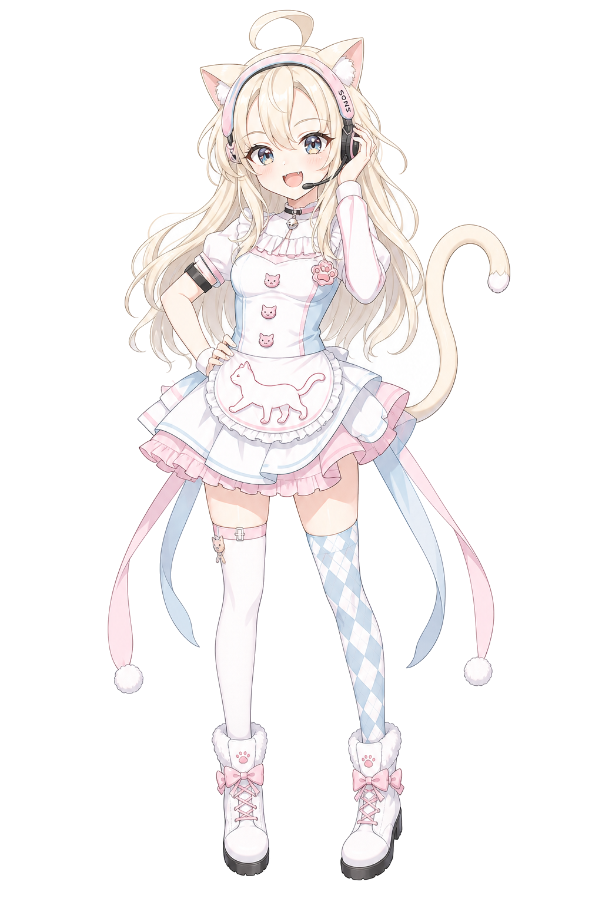
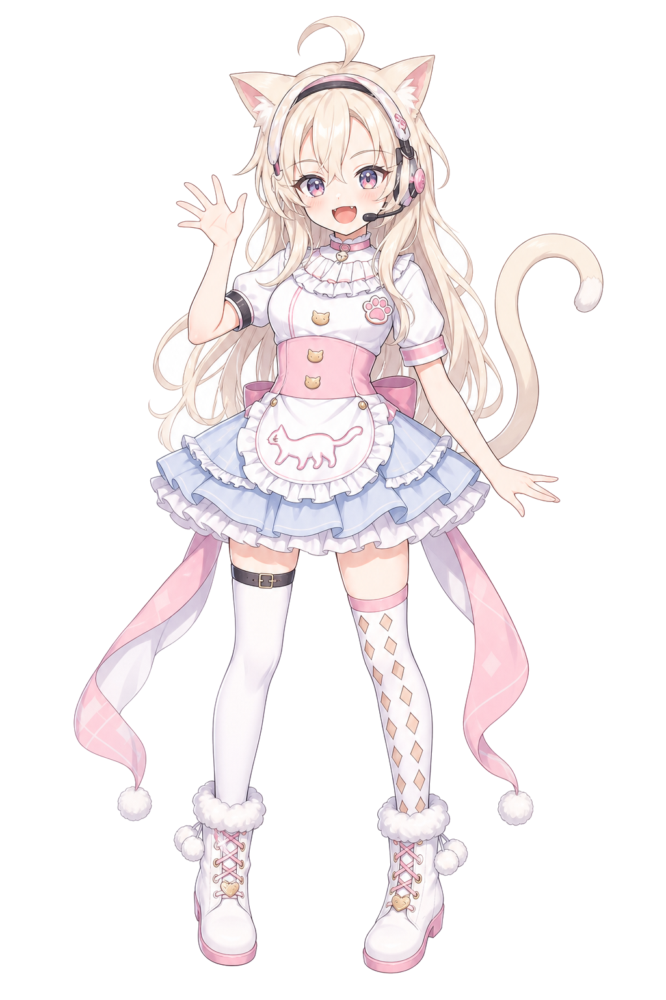
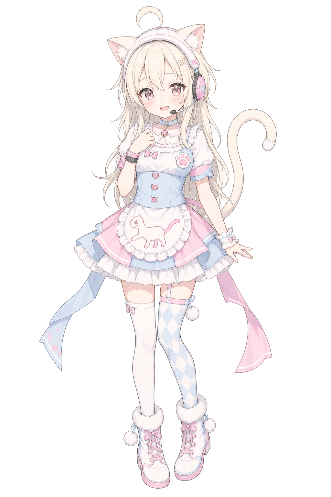

基本情報
- 名前
- 猫宮 鈴（ねこみや すず）
- タイプ
- 仮想キャラクター
- モチーフ
- 猫、メイド、配信者
- 好きなもの
- 鈴の音、甘いミルクティー、夜の雑談
Virtual Character / Cat Maid Streamer
Nekomiya Suzu / ねこみや すず
ピンクと水色のメイド衣装、猫耳ヘッドセット、ふわっと揺れるしっぽがチャームポイント。 みんなの毎日に、少しだけ甘い音を届ける猫系バーチャルキャラクターです。
猫宮 鈴は実在の人物ではなく、創作された仮想キャラクターです。

Profile
明るい声と親しみやすいリアクションで、初めて会う人にもすぐに寄り添う女の子。 ヘッドセット越しに届く「おかえりなさい」の一言で、疲れた日も少し軽くしてくれます。
配信ではゲーム、雑談、歌、リスナーとのゆるい企画が得意。 しっぽの動きに気持ちが出やすいところも、鈴らしい魅力です。
Gallery


Information
このページは、猫宮 鈴という架空のキャラクター紹介用に制作したサンプルHPです。 掲載内容は創作設定であり、実在の人物・団体とは関係ありません。